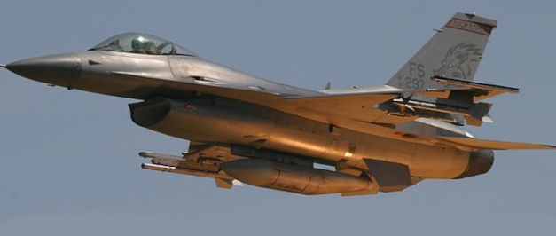
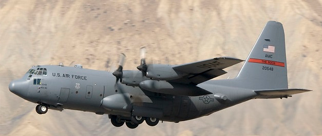
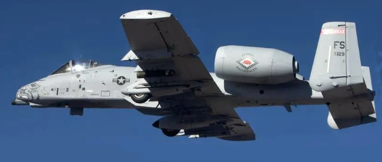

Cameron Wilson's Page
Info
This site has a 3 question quiz about military aviation. A brief history of military aviation can be found HERE.
Aviation has been a strategic part of military operations since it has existed. Originally balloons and low power
biplanes were used for observation and eventually used for bombing and later were equpped with guns, missiles,
and electronic equpment. Not all military operations are used in battle, however, most missions involving the
use of aircraft are humanitarian or training in nature. My favorite aircraft, the Lockheed A-12
(variants YF-12 and SR-71) had no offensive capabilities at all - only cameras and electronic
logging equipment.
Quiz
Which of the following is an F16?
a)

b)

c)

How fast is the fastest human piloted air-breathing aircraft (not a rocket) ever built?
a) 1,650 mph
b) 623 mph
c) 2,275 mph
During WWII which country built the first operational jet fighter?
a) Germany
b) United Kingdom (Britain)
c) United States